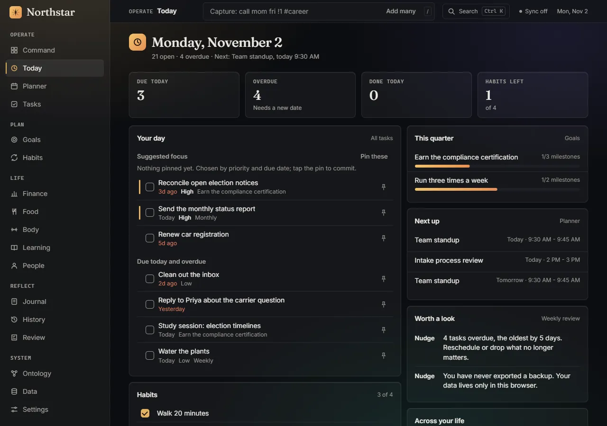

Module 01 of 14
Today
Your day on one screen.
- Where the day stands. Due, overdue, done and habits left, counted live from your records.
- Suggested focus. Chosen by priority and due date. Pin the ones you commit to.
- Context beside the list. Quarter goals, the next event and gentle nudges such as overdue work or no backup yet.
